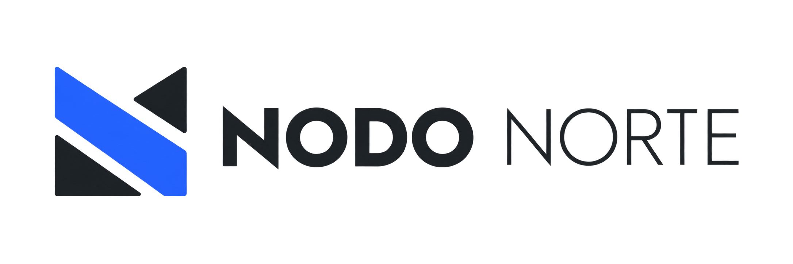

Arquitectura residencial
Viviendas nuevas y reformas integrales con atención al espacio, la luz y el uso cotidiano.

Arquitectura + Interiorismo · Valencia
Arquitectura e interiorismo para lugares que deben funcionar, durar y tener carácter.
Estudio
En NODO NORTE diseñamos viviendas, espacios de trabajo e interiores comerciales desde una mirada funcional y precisa. Cada proyecto parte del contexto, las necesidades reales y una idea clara.
Viviendas nuevas y reformas integrales con atención al espacio, la luz y el uso cotidiano.
Diseño de interiores para hogares, oficinas y pequeños negocios.
Concepto, materiales, mobiliario y lenguaje visual para espacios con identidad.
Contacto
Una primera conversación sirve para entender el lugar, el alcance y las preguntas que merece la pena resolver.